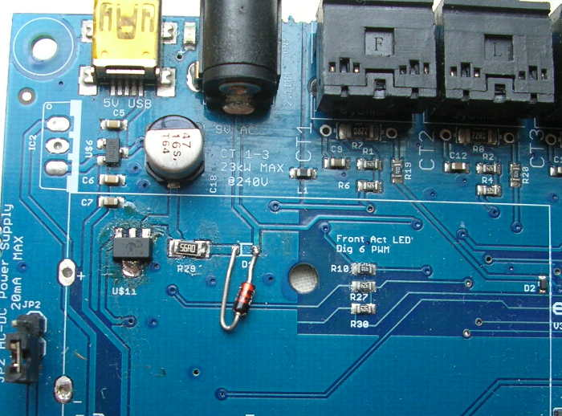

After 2+ years, my RFM12PiV2 receiver seems to have gone phut. It did happen around the time of a big thunderstorm - could this be the reason?
Anyway, I have ordered a RFM69PiV3 as a replacement and hopefully I won't have any compatibility problems.
Archived Forum |
|
RFM12Pi damaged by thunderstorm???Submitted by Andrew Wedmore on Fri, 14/08/2015 - 15:23After 2+ years, my RFM12PiV2 receiver seems to have gone phut. It did happen around the time of a big thunderstorm - could this be the reason? Anyway, I have ordered a RFM69PiV3 as a replacement and hopefully I won't have any compatibility problems. » |
Re: RFM12Pi damaged by thunderstorm???
Can you expand on "gone phut" ?
Although electrical surges etc can do very unexpected things I would be surprised if 'only' your rfm2pi was effected if it was due to the storm. There should be no compatibility issues beyond setting the usual baseid, group and frequency if required except for perhaps setting the baud, if your v2 was 2yrs old it would be using a baud of 9600 and the v3 will be 38400,
What have you tried to test / revive it? is there any led activity at power up? do you get any response to this ?
avrdude -v -c arduino -p ATMEGA328P -P /dev/ttyAMA0 -b 38400
Paul
Re: RFM12Pi damaged by thunderstorm???
Paul, thank you for that.
When I power up, a green LED on the RFM12Pi comes on briefly and then goes out and stays out.
The rfm12piphp service is running, but the emoncms "inputs" web page is showing no data being received on any of the nodes that get data via the rfm12pi. I have other nodes on my system that are continuing to log data that comes from other sources (not via the rfm12pi) so I think the actual data logging side is working OK. I'll attach a screenshot that shows this - node 7 is a non-rfm12pi node. Nodes 8 and 9, are rfm12pi nodes and they used to receive data OK. I don't think it is the transmitters at fault because there are completely separate 3 transmitters and one receiver listening to them, and the data from all 3 transmitters stopped being received at the same time. So when I say it has "gone phut" I mean that I am no longer getting any data from it. I don't know for sure that it is a hardware problem; it just seemed the easiest culprit to suspect and replace.
Here is the output from the avrdude command.
avrdude-original: Version 5.11.1, compiled on May 23 2012 at 11:08:25 Copyright (c) 2000-2005 Brian Dean, http://www.bdmicro.com/ Copyright (c) 2007-2009 Joerg Wunsch System wide configuration file is "/etc/avrdude.conf" User configuration file is "/root/vrduderc" User configuration file does not exist or is not a regular file, skipping Using Port : /dev/ttyAMA0 Using Programmer : arduino Overriding Baud Rate : 38400 done with autoreset avrdude-original: stk500_getsync(): not in sync: resp=0x78Re: RFM12Pi damaged by thunderstorm???
You are most probably right to suspect the rfm2pi's not doing it's bit, I just wondered whether it was terminal as they are normally pretty reliable.
The LED flash suggests something is happening, although the avrdude log shows a communication error which could mean a HW fault or bootloader issue but it isn't conclusive as there are a number of things that can also cause a communication issue. since avrdude is a bit finicky, Was the rfm12piphp service running at the time? serial port access must be exclusive for any SW to work correctly, so the service must be stopped.
A good power supply is essential so removing any non-essential usb devices may help
you could try using a serial console (minicom etc) to try and get a response from the rfm2pi,
You could also test the Pi serial port by linking the gpio rx/tx pins together, anything "sent" in the serial console should appear in the "received" box due to the loop, but I've not known a serial port to fail on a Pi and the serial port and the SW will get tested when you try the RFM69Pi. However....
I didn't realize you were using the raspberrypi module as far as I'm aware there is no way to set the baud in the interface so you will need to edit the code from 9600 to 38400 at L73 of raspberrypi_run.php (probably?) or edit, recompile and upload a modified sketch to the rfm69pi (or move to emonHub)
Paul
Re: RFM12Pi damaged by thunderstorm???
Paul - thanks again for your help. I now think I know what my problem is, and it's not what I thought it was.!
I have run the avrdude command again after stopping the rfm12piphp service and as a result I now think that the reciever IS working and that all 3 transmitters HAVE stopped working, while the RFM12Pi is OK! That sounds like an amazing coincidence, but I think there may have been a common cause that blew all 3 at the same time. I will paste the new avrudude output at the end of the message.
Looking at the EMONCMS graphs and inputs from just before the monitoring stopped working, I can see that all 3 transmitters were reporting a very high AC voltage. The last AC voltage reading from node 8 was 307.58; from node 9 it was 310.1 and from node 10 it was 308.58 volts. These are RMS voltages and normally they are in the range 210 - 240. I have been logging the AC voltage from node 10 for over a year and it has always been in this range.
I have attached a screenshot showing my AC voltage graph just before things went down. [ACVoltageGraph.png - the brown is the AC RMS voltage and the blue is the generator output in watts.]
All my 3 EmonTxV3 transmitters are powered through the 9V AC transformers, not via USB. So I calculate with a 310V input, these will be pumping 9 x 310/230 volts into the EmonTxV3 units - ie over 12 volts.
As an "off-gridder" my AC is all produced by a Victron inverter/charger (specifically, a Victron Phoenix Multiplus 5000/48). I have had one previous occasion several years ago (before I started using the OpenCMS products) when the AC voltage from the inverter ran out of control. On that occasion, it damaged part of my consumer unit panel but, worryingly, did not trip any trip switches. In fact that episode was part of my motivation for installing the OpenCMS products, Now that the problem has occurred again and I have the logging data (which to my mind is pretty conclusive) I will take it up with the manufacturers - but I am not particularly hopeful of their response. (There is also a solar inverter in the system, but it is the Victron that determines the voltage and frequency - except when the generator is on, but that's a different story).
I checked the AC voltage with a multimeter just now and it is about 240V - a little higher than it should be, but acceptable.
Anyway if I'm right I now have 3 dead EmonTxV3 units - which is a shame as they are a lot more expensive than the RFM12Pi (or the RFM69PiV3 that arrived in the post yesterday and is sitting on my desk). In fact I am pretty sure that they are dead as they used to have a flashing red LED and it isn't flashing any more, not even on power-up. I had been intending to change them to be powered by USB but I just hadn't got round to it - perhaps that would have saved them from being damaged. I don't know if there is any way that they can be repaired.
Another thought is that I could rig up OpenCMS to send me an alarm when the AC voltage goes out of range. But actually I think what I really need to do is to install some separate electro-mechanical device that shuts off the AC if the voltage gets too high.
Finally, I am intending to switch to emonhub but that is another thing I haven't got round to yet. I have got 18 months' worth of data in timestore which I am very keen to preserve as it will help me figure out where to upgrade the system in the future.
Here is the avrdude output.
pi@raspberrypi ~ $ sudo service rfm12piphp stop Log is turned off Stopping RPI: stopped pi@raspberrypi ~ $ avrdude -v -c arduino -p ATMEGA328P -P /dev/ttyAMA0 -b 38400 avrdude-original: Version 5.11.1, compiled on May 23 2012 at 11:08:25 Copyright (c) 2000-2005 Brian Dean, http://www.bdmicro.com/ Copyright (c) 2007-2009 Joerg Wunsch System wide configuration file is "/etc/avrdude.conf" User configuration file is "/root/.avrduderc" User configuration file does not exist or is not a regular fil e, skipping Using Port : /dev/ttyAMA0 Using Programmer : arduino Overriding Baud Rate : 38400 done with autoreset AVR Part : ATMEGA328P Chip Erase delay : 9000 us PAGEL : PD7 BS2 : PC2 RESET disposition : dedicated RETRY pulse : SCK serial program mode : yes parallel program mode : yes Timeout : 200 StabDelay : 100 CmdexeDelay : 25 SyncLoops : 32 ByteDelay : 0 PollIndex : 3 PollValue : 0x53 Memory Detail : Block Poll Page Polled Memory Type Mode Delay Size Indx Paged Size Size #Pages MinW MaxW ReadBack ----------- ---- ----- ----- ---- ------ ------ ---- ------ ----- ----- --------- eeprom 65 20 4 0 no 1024 4 0 3600 3600 0xff 0xff flash 65 6 128 0 yes 32768 128 256 4500 4500 0xff 0xff lfuse 0 0 0 0 no 1 0 0 4500 4500 0x00 0x00 hfuse 0 0 0 0 no 1 0 0 4500 4500 0x00 0x00 efuse 0 0 0 0 no 1 0 0 4500 4500 0x00 0x00 lock 0 0 0 0 no 1 0 0 4500 4500 0x00 0x00 calibration 0 0 0 0 no 1 0 0 0 0 0x00 0x00 signature 0 0 0 0 no 3 0 0 0 0 0x00 0x00 Programmer Type : Arduino Description : Arduino Hardware Version: 3 Firmware Version: 4.4 Vtarget : 0.3 V Varef : 0.3 V Oscillator : 28.800 kHz SCK period : 3.3 us avrdude-original: AVR device initialized and ready to accept instructions Reading | ################################################## | 100% 0.01s avrdude-original: Device signature = 0x1e950f avrdude-original: safemode: lfuse reads as 0 avrdude-original: safemode: hfuse reads as 0 avrdude-original: safemode: efuse reads as 0 avrdude-original: safemode: lfuse reads as 0 avrdude-original: safemode: hfuse reads as 0 avrdude-original: safemode: efuse reads as 0 avrdude-original: safemode: Fuses OKAll comments gratefully received.
Re: RFM12Pi damaged by thunderstorm???
Well that good new about the rfm2pi, but not so hot about the emonTx's :-(
Again I wouldn't assume they are beyond repair just yet, in fact if you have no led activity you should start by checking the AC adapters, I think they are less likely to survive a >300vac supply than the emonTx.
Try powering the emonTx's from a different supply/method eg 5vdc, Do you have a USB programmer ? if so do you see any serial activity when hooked up to a PC?
It may be a software issue so reloading the sketches may help, or it maybe a problem with the rectifier/reg circuit only used when powering from AC/AC, if it is then it just power via 5vdc as you intended.
Upgrading to emonhub is different to emoncms, the timestore factor won't effect emonhub (or vice versa) you will need to convert the timestore data to continue logging to that feed with the latest emoncms versions.
Paul
Re: RFM12Pi damaged by thunderstorm???
I second Paul's "Try them on a programmer".
I blew the rectifier diode in my emonTx V3.4 while testing the supply, and that was nowhere near 300 V. I've got a wire-ended one in place of the SMT now.

Re: RFM12Pi damaged by thunderstorm???
Your comment was spot on. It is the 9V AC transformers that have blown. I have switched to USB power supply and all is well - everything working again - except of course that I don't have AC voltage measurements. I have also removed the JP2 power supply jumpers. All I need now is to replace one of the AC transformers and I can be measuring voltage again.
Thanks for all the help. I must try and learn not to jump to conclusions too quickly.